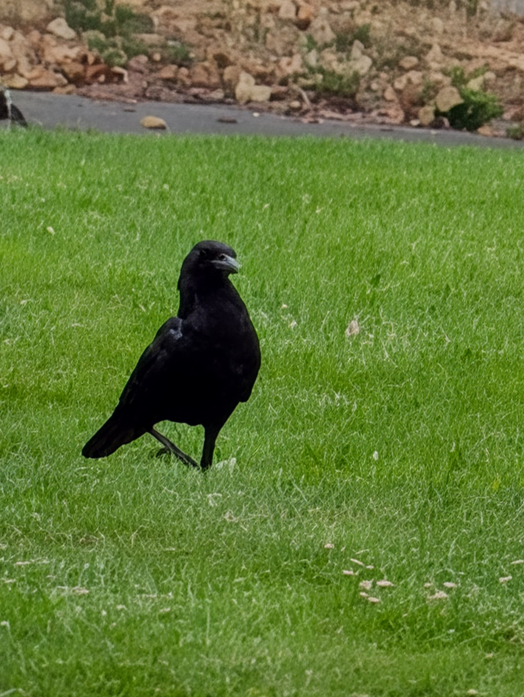
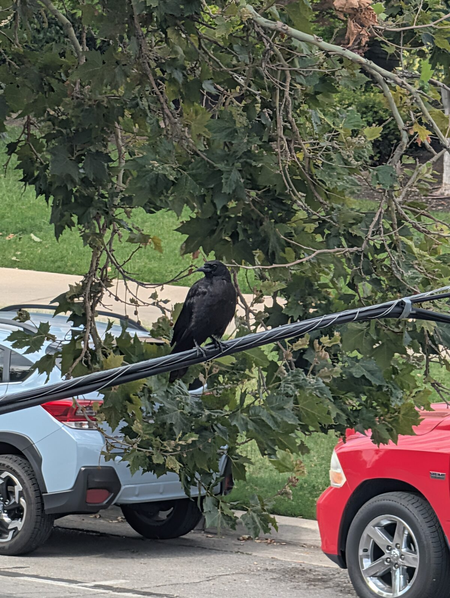
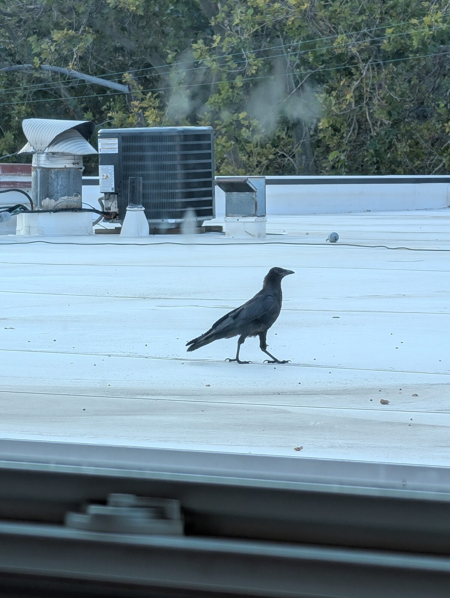
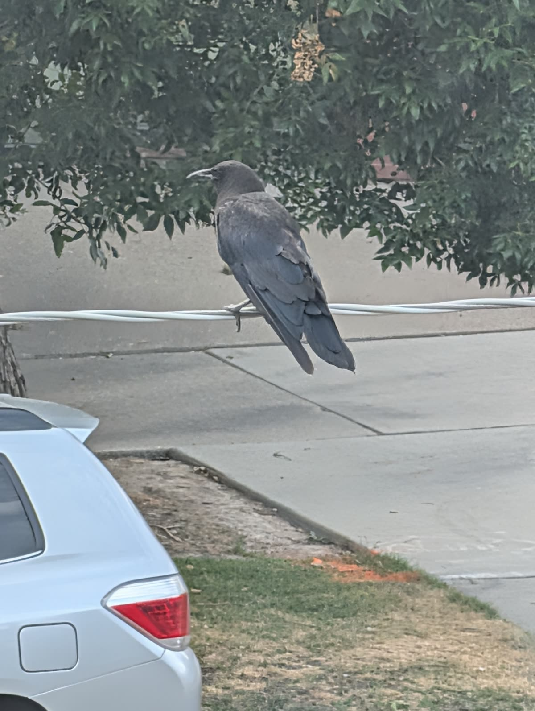
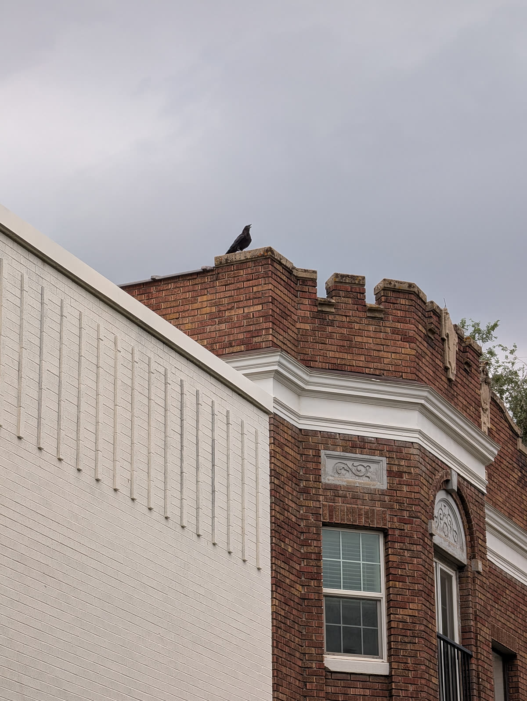
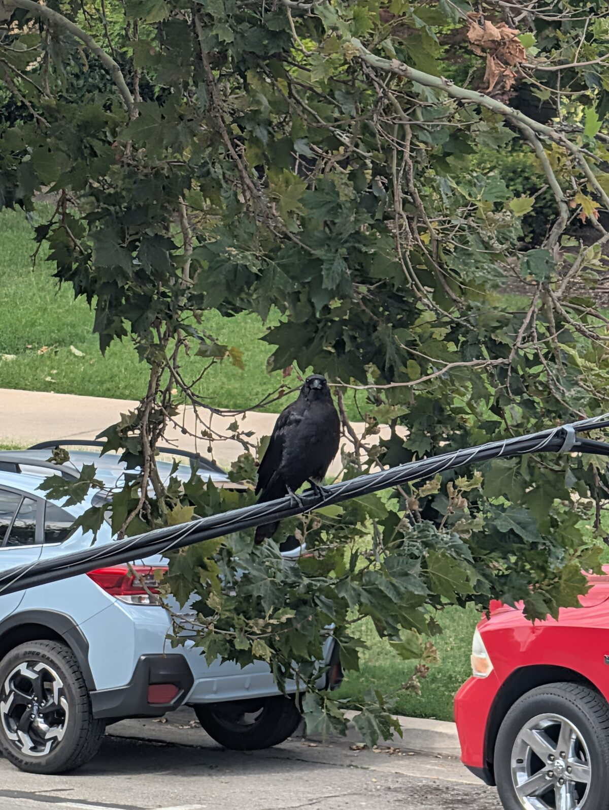
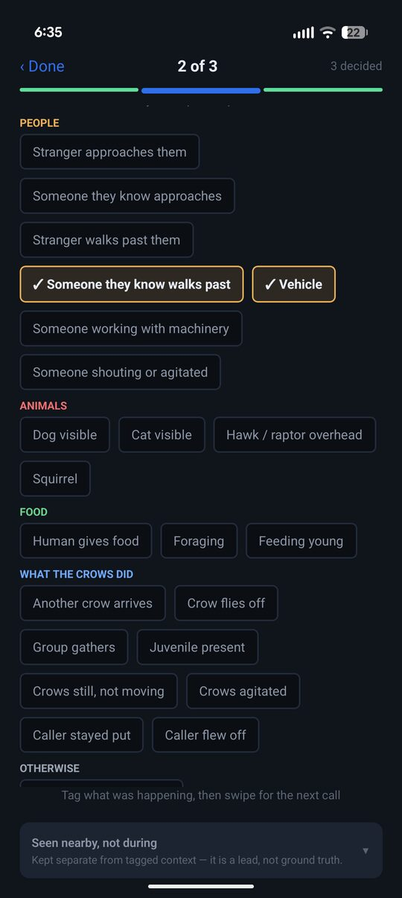
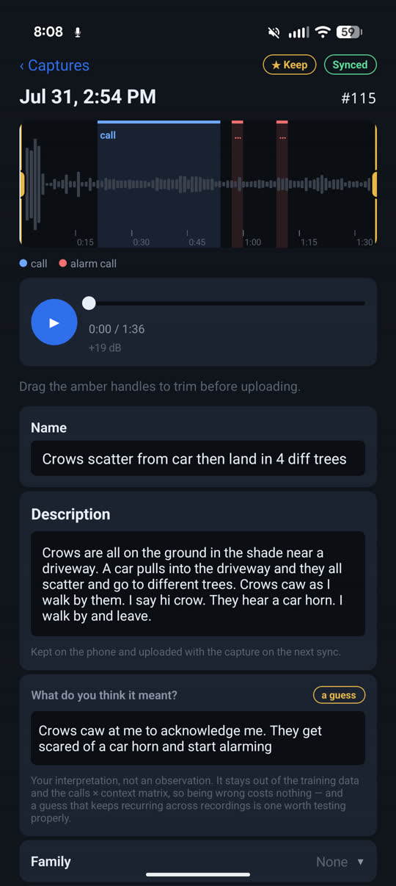

Since {{project.since}} · one backyard · Salt Lake City
An AI to talk to crows.
This started when I began feeding a murder of local crows. They were obviously
smart, obviously talking to each other, and I wanted to know what about.
CrowGPT is the set of tools that came out of it: CawDex
reads crow calls by type, the CrowGPT model says them back, and the
goal is a translator that runs in both directions.
Shared by {{credits.recordists}} recordists on Xeno-canto
The murder in question
The crows I feed are five: Thrasher and Ripjaw the parents, Killer and Shredder
the fledglings, and Edgar, a yearling who stayed on to help guard the brood. The
notes I was already keeping on them turned out to be exactly the data this
needed.

Thrasher, one of the two parents, strutting the lawn.

Edgar on the line out front, watching the street.

Killer on the office roof, the friendly one of the two.Killer earlier in the summer, still half down.Two of the family on the roofline, keeping watch.
Killer, Edgar and Shredder sharing a streetlight, which is most of what they
do.

Ripjaw on the wire, waiting for the peanuts to appear.

Edgar, mid-call, from the top of the brick.

Edgar deciding what I am. He usually gets there first.
Killer calls back when I say “bye buddies.” That is not a result. It is
why I started.
The end state is a translator that runs in both directions. CawDex,
the call-type classifier, already works. The missing ingredient is
semantics, what was actually happening when a call was made, and I
collect that every day. Pair the two and you get a
Crow Translate. Simple calls first: dog spotted,
human spotted, food.
The other half is CrowGPT, which generates crow calls instead
of reading them. Put the two together and it runs both directions: crow → human
→ crow. Cross-species conversation, and maybe friendship, with the help of AI.
Crow Translate · listening
What did that call mean?
A recording goes in; the corvids in it are found, named, and each call
labeled by type on a timeline. That part works. Turning a type into
meaning takes the second ingredient, what was happening at the
moment the bird called, which is what I am out collecting.
CrowGPT · speaking
Say it back
A model that generates crow calls rather than reading them, on demand and by
type. Early, and getting better. It is the half that makes this a
conversation instead of a very elaborate subtitle track.
What it can already tell apart
CawDex sorts every call it finds into one of five types. Press a dot to hear
one: the best example of each the project has, five seconds apiece.
Alarm call
Harsh, fast, repeated, with the whole bird in it.
Something is wrong, and the other crows are being told.
Also filed here: mobbing and scold, the directed,
persistent version aimed at a cat, an owl or a hawk on the ground.
Clip: recorded with the app in Salt Lake City.
Flight call
Spaced, carrying caws given on the wing.
Keeps the group in touch while it moves: here I am, this way.
The speaking half. A small transformer, 18.7M parameters, trained from scratch on
call bouts cut out of archive recordings, with
no human labeling anywhere in the loop. Ask it for an alarm
call, a generic call, begging or song, and it produces a new one: generated,
not copied from anything it heard.
Hear it
Two generations of the model. Everything under a CrowGPT caption is
generated, not a recording of a bird. Next to them, the real thing: a
field-recorded American Crow alarm call, labeled by ear, so you can judge
the gap, and the progress, yourself.
CrowGPT1: generated, the early “crowbot” stageCrowGPT2: generated, the current modelA real crow: field recording
Please don't play these outdoors. A fake alarm call could
stress real crows, so I don't play them to birds either, and the model's access
terms carry the same rule.
The app: collecting the other half
So I built an app: record crows with GPS, get the calls identified, and note
what was happening when each one was made.
Record, then keep. The ★ is the recordist saying this one is real.
Calls typed and placed on the waveform: flight call, begging, call.
The analyzer's guess is shown, then confirmed or overruled. Only the human
answer counts.

What was happening, picked from a list.
The witnessed situation, written at the time. This is the scarce half.
Every capture carries where it was taken, so territory questions stay
answerable.

Your guess at what it meant, kept separate from what you saw.
The field app is Android, free, and in a closed preview: it records, labels
and syncs to the project server, so a recordist anywhere can add their crows to
the corpus. Ask below and I'll send an invite. Say where you would record and
which corvids are there; a
population the corpus does not have yet is the best reason to say yes.
The other tools
CawDex · listening
Reading the calls
Audio goes in, and every corvid call in it comes out found, named by species
and labeled by type on a timeline. The result that shaped the project came
from it: the same pipeline, trained on hand-reviewed labels instead of
archive tags, lifted alarm and song decisively. Labels were the bottleneck,
not the model.
One backyard produces one family's calls. CawScout scores a 250 m grid
over the whole valley on tall canopy, open turf, sightings and predators,
and ranks it into a numbered target list on the app's map, so the next
family is a visit rather than a random dawn walk.
The state of play, plainly. Every limit below is a piece of work waiting, and
most of them are more interesting than the parts that already run.
Where it still falls short
Human labeling is early. About {{labels.minutes}} minutes of
hand-labelled calls so far, and that is what limits the project.
No call has been translated. The classifier says
alarm call; it does not say dog. Nothing here has yet mapped
a call to a meaning, because that needs enough calls paired with a witnessed
situation, and I am still collecting the first few dozen.
Open to collaborators
This is a one-person project that does not need to stay one. There is more work
here than time, and several parts are self-contained enough to hand to someone
who finds them interesting.
Birders and crow people. The scarce resource is not compute,
it is somebody who can say what a bird was doing when it called. If you watch
corvids closely, you already have the rare skill.
Audio ML. CrowGPT is small and there is obvious headroom in
the generation half: room to make it sound more like a real crow.
Android and dashboards. The capture app and the labeling
desk are where collection speed is won or lost.
Anyone with corvids nearby, any species, anywhere. There
are already models for hooded crow, carrion crow, rook and common raven, and
comparing what one call type means across populations is a better question
than anything one backyard can answer.
The easiest way in is to record: the app is in a closed preview and an invite
takes one email. Request access.
The code is open:
github.com/benfaerber/crowgpt.
Everything on this site is in it, with a quick start that runs on a fresh
clone. The CrowGPT weights are on Hugging Face at
faerber/crowgpt, gated
behind an agreement not to play them to wild birds. Issues and pull requests
are welcome.
Tell me what you'd want to work on:
hello located at crowgpt period org.